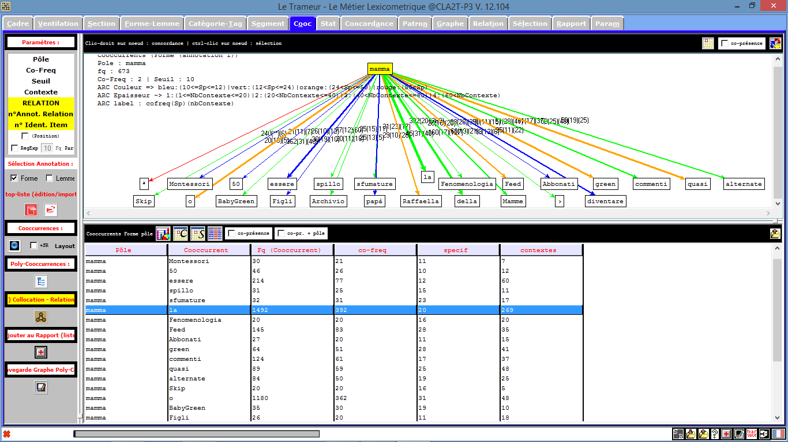
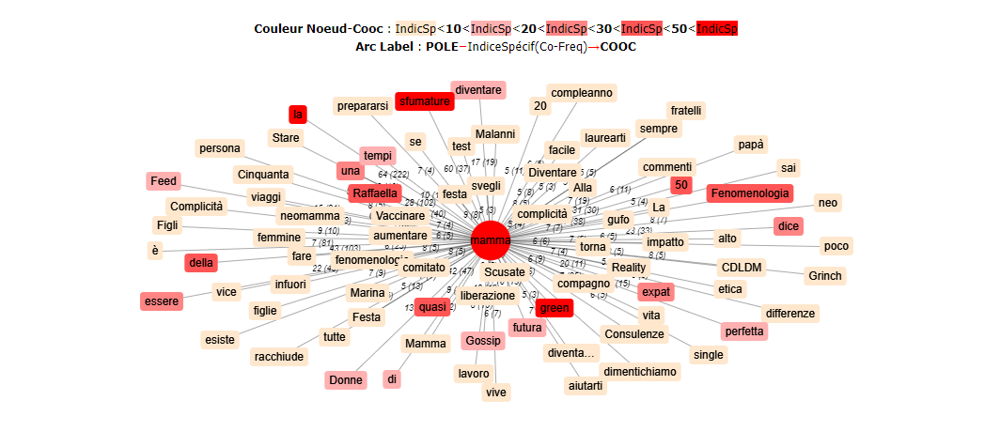
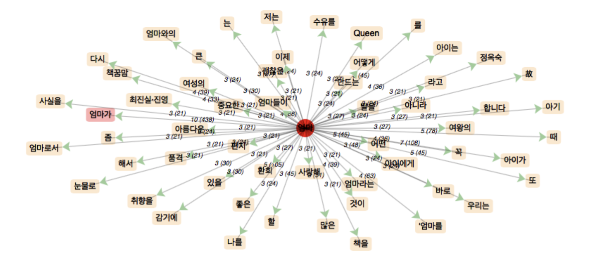
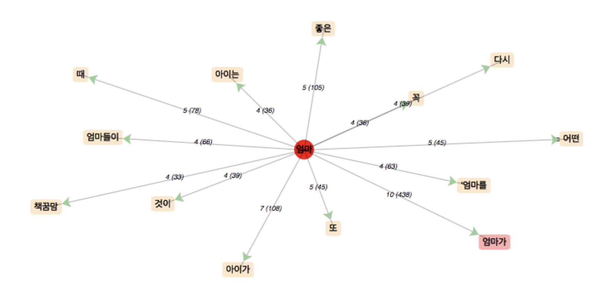

La vie multilingue des mamans ...
Par trois étudiantes du M1 Traitement Automatique des Langues !
Objectifs
Ce site a été créé par trois étudiantes de Master 1 Traitement Automatique des Langues des universités Sorbonne Nouvelle (Paris 3), Paris-Nanterre (Paris 10) et INALCO, dans le cadre du cours Programmation et Projet Encadré 1 dispensé par Serge Fleury et Jean-Michel Daube.
Le but de notre projet a été de choisir un mot, dans notre cas le mot "maman" et de l'étudier dans plusieurs langues : le français, l'italien et le coréen.
Si vous voulez en savoir plus sur nous, rendez-vous dans la partie About us !
Si vous êtes curieux et que vous voulez avoir plus de détails sur la manière dont nous avons avancé dans notre projet, rendez-vous sur notre blog !
Notre blog

Pour accéder à notre blog, cliquez sur ce lien :
Plurimaman - La vie multilingue des mamans ...Scripts
C'est dans cette partie que vous pourrez retrouver nos scripts terminés. Nous avons fait le choix de publier nos trois scripts car nous avons chacune travaillé sur notre propre machine pendant l'avancée du projet.
SCRIPT SOYOUNG 2 (concaténations des dumps et contextes)
Pour obtenir plus d'informations sur nos scripts (fonctionnement de chaque ligne), vous pouvez vous rendre sur notre blog.
Tableaux
A partir du script, nous avons chacune obtenu un tableau comprenant tous les résultats des traitements que nous avons effectués sur les données que nous avons récupérées.
Voici les trois tableaux que nous avons obtenus :
Le Trameur et iTrameur
Rappelons-nous : l'objectif principal de ce projet était d'étudier la vie multilingue du mot choisi "maman" en français, "mamma" en italien et "엄마" en coréen.
Grâce à des outils présentés en cours, Le Trameur et iTrameur, nous avons pu analyser les données que nous avons récupérées sur le web et nous avons pu les comparer dans les différentes langues.
Voici ce que nous avons pu tirer de nos données :
Pour l'italien :
 Pour le coréen :
 Pour le français :


Pour répondre à notre problématique, voici les analyses que nous avons faites :
Un des caractéristiques du coréen est que, les suffixe nominaux sont souvent après le nom, par exemple '은([eun])', '는([neun])', '이([yi])' et '가([ga])'. En tenant compte de cela, nous avons analysé le corpus du mot '엄마(maman)' en coréen en utilisant iTrameur, et le résultat est que, sauf le suffixe, le mot '아이(enfant)' et l'adjectif '좋은(bon(ne))' sont utilisés le plus souvent avec "maman" en coréen. En d'autres termes, si vous recherchez '엄마(maman)' sur le web en coréen, les résultats liés à la bonne éducation des enfants, l'accouchement, l'éducation prénatale, les bonnes recettes pour les enfants, être bonne mère, etc. sont accablants. Réellement, à mesure que les femmes coréennes deviennent mères, elles accordent beaucoup d'attention et d'énergie à la garde d'enfants et beaucoup d'entre elles quittent leurs carrières. En particulier, d'ailleurs, le résultat de l'ajustement de indSPmin à 4 est le mot "책꿈맘([chek-kkoom-mam]. livre, rêve, maman)", c'est un mot créé parmi les mères récemment, ce qui signifie "partager des livres, partager des rêves, partager des mamans", et de plus c'est le nom d'une association de lecture composée de mères pour les enfants de la communauté, pas seulement leurs propres enfants. Ce club aide également d'autres mères qui veulent obtenir de nouveau un emploi. À cet égard, si je présente brièvement l'un des phénomènes socioculturels récents en Corée, il y a un autre nouveau mot "맘충([mam-choong].maman+insecte)" : des mères égoïstes qui ne savent que ses enfants. Plus précisément, c'est un mot composé de "maman" en anglais et d'un caractère chinois 'choong' (qui signifie 'l'insecte'), et fait référence à une mère qui est indifférente à son enfant qui embête les autres dans les lieux publics. On dit que les mères de cette association "책꿈맘" sont appelées "맘천사([mam-cheon-sa]. Maman ange)" contre ce mot négatif et de mépris féminin, "맘충". Dans les résultats de nuage de mots, également, sauf pour '엄마(maman)~' avec les suffixes, beaucoup de mots comme '아이(enfant)' et '좋은(bon(ne))' apparaissent. Dans le nuage, il y a aussi beaucoup de synonymes de '아이(enfant)' tels que '딸([ttal]. fille)', '아들[a-del]. fils), '아기([a-gi]. bébé', etc. De plus, j'ai obtenu un autre résultat remarquable dans le nuage, quand je pense à relier les mots '엄마도(mère aussi)', "여성(femme)", "woman", "queen(reine)", il est possible de lire l'esprit des mères qui veulent protéger et retrouver leur identité en tant qu'une 'femme', en plus qu'en tant qu'un rôle parental juste concentré sur l'éducation et la famille. Pour référence, le suffixe '도([do])' en coréen est un auxiliaire pour indiquer une addition ou un fait identique, qui peut être comparé à 'aussi' en français. C'est-à-dire que, on peut deviner les contextes dans lesquelles l'auxiliare '도(do)' est utilisé pour impliquer ou soutenir que des 'maman' sont des mères mais aussi des femmes en même temps. En réalité, vraiment, les images de mères sacrificielles en Corée qui avaient abandonné beaucoup de leurs propres autrefois, par exemple, des emplois, changent ces dernières années vers celles des "Working mom" qui veulent à la fois s'occuper des enfants et des carrières.
A travers ces résultats, nous pouvons remarquer des mots tels que « relation », « partager », « vie », « future », « parent », « être », « devenir », « rôle », etc. qui semblent caractériser d’une manière plutôt logique le mot « maman ». On remarque également des mots qui soulève des débats de société et d’actualité, ou qui semblent correspondre à des jugements, comme « lesbienne », « imparfaite », « bonne », « apprentie », « youtubeuse », « jeune », etc.. J’ai également trouvé intéressant de rechercher les cooccurrents du mot « mère », un synonyme de « maman » mais qui est utilisé en français de manière moins familière et plus sérieuse que dans les contextes où on parle de « maman ». On remarque une différence intéressante entre "maman" et "mère" : les cooccurrents de « mère » semblent moins « doux », plus sérieux que ceux de « maman ». Par exemple, on remarque la présence de mots tels que « toxique », « défaillante », « battue », « bipolaire » ou encore « mauvaise » qui évoque des problèmes psychologiques ou des problèmes au sein des relations conjugales et familiales. De plus, on retrouve encore une fois l’idée de jugement de la mère. On peut donc dire que l’utilisation d’un mot référant à un même individu peut avoir des objectifs différents selon son caractère plus ou moins familier.
On peut tout de suite remarquer que le mot « mamma » est souvent précédé par l’article défini « la » et l’article indéfini « una ». J’ai comparé ça avec la langue française et je me suis rendue compte qu’en italien on utilise souvent l’expression « fare la mamma » = faire la maman, alors qu’en français on n’utilise pas cette expression. J’ai aussi remarqué la présence du mot « bambino » = enfant et bébé dans les deux contextes droits et gauches. J’ai alors voulu vérifier combien de fois le mot « bambino » est présent dans le corpus: on trouve 337 occurrences du mot « bambino ». Je pense que c’est tout à fait normal, si on parle des mamans, on parle forcement des enfants! J’ai eu la confirmation que l’article défini est bien une cooccurrence du mot: il est présent 1492 fois! Comme en français, en Italien aussi on trouve le verbe « essere » = être mais aussi le verbe « diventare » = devenir. —-> essere mamma, diventare mamma. D’autres cooccurrences sont les mots « figli » = enfants et « papà ». J’ai remarqué aussi la présence du mot « Montessori ». Il s’agit d’une méthode d’éducation: éducation sensorielle et kinesthésique de l’enfant. J’ai pensé que c’est à cause du grand nombre des sites qui parle d’éducation de l’enfant. On peut voir que en plus de cooccurrences déjà trouvées avec le Trameur, on obtient aussi sur iTrameur d’autres cooccurrences, tels que: perfetta (parfaite) qui renvoie à un jugement comme pour l’analyse du corpus en français; etica (éthique), lavoro (travail), laurearti (« avoir ta licence »). Cela me fait penser aux blogs où il y avait des discussions à propos de la vie des mamans qui travaillent où qui font des études à coté. Comme on dit en italien: « fare la mamma » non è facile (n’est pas facile).
Conclusion
Pour conclure, nous avons voulu faire une comparaison des résultats dans les trois langues, mais nous n'avons pas trouvé de grandes différences entre nos analyses : on retrouve certaines coocurrences communes telles que "éducation", "enfant", "fille", "bébé", "bonne", etc. Le mot "maman" est plutôt général dans le monde, c'est-à-dire que la mère est considérée dans nos trois langues de la même façon.
En coréen et en italien, on a pu voir des mots comme "travail", "carrière", "emploi", "licence", ce qui veut peut être dire que les femmes ne sont pas que des mamans ! En effet, elle peuvent vivre leur vie de mère mais aussi leur vie active.
On a remarqué que en italien, le mot "mamma" est presque toujours précédé de l'article "la". Ce n'est pas le cas en français et en coréen. Ce phénomène est lié à des expressions telles que "fare la mamma" ("faire la maman") qu'on pourrait expliquer par le fait qu'être maman peut aussi être considéré comme un métier.
En français, on a pu observer une différence entre les mots "maman" et "mère" puisque le premier était entouré de cooccurrents plutôt positif alors que le second avait plutôt des coccurrents négatifs et porteurs de jugements ("bipolaire", "défaillante", "toxique", etc.). En italien, nous n'avons pas spécialement trouvé de cooccurrences pour le mot "madre" ("mère").
En coréen et en italien, le mot "maman" est plus utilisé dans un registre courant alors qu'en français, il est utilisé dans un registre familier. Cependant, dans tous les cas, "maman" est utilisé dans un contexte informel et "mère" dans un contexte formel, avec des degrés de formalité plus ou moins élevés.
Ce cours "Programmation et Projet Encadré 1" a été très intéressant car on a pu apprendre beaucoup de choses (surtout à gérer notre stress). Même si on a été parfois perdu lorsque le script ne fonctionnait pas, on a finalement réussi à obtenir un résultat et à mieux comprendre et manipuler nos machines.
Nous souhaitons remercier monsieur Serge Fleury et monsieur Jean-Michel Daube pour leur aide tout au long du semestre !
About Us

De gauche à droite sur la photo :
Angèle : angele.barbedette@gmail.com
Soyoung : dreamsoyn@gmail.com
Yamina : yamina.mir95@gmail.com